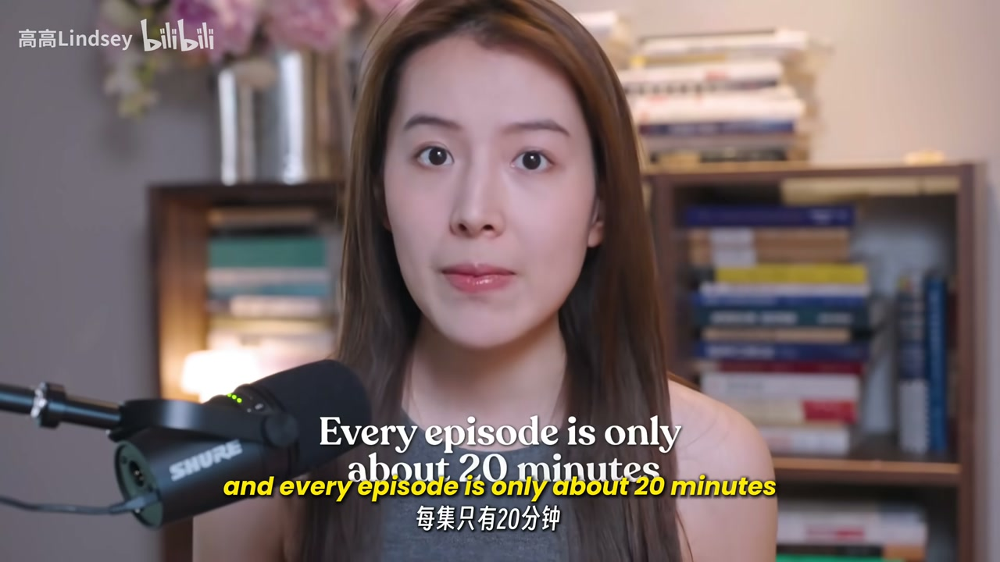
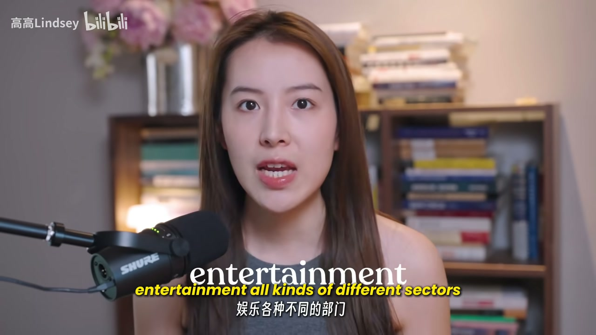
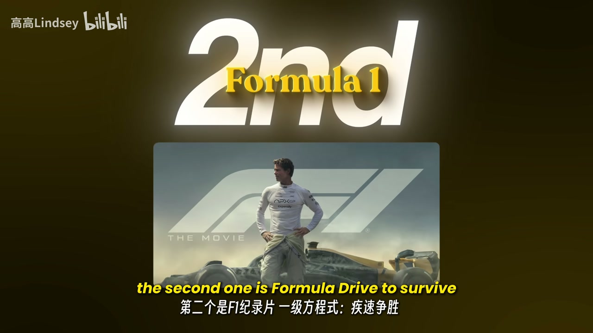
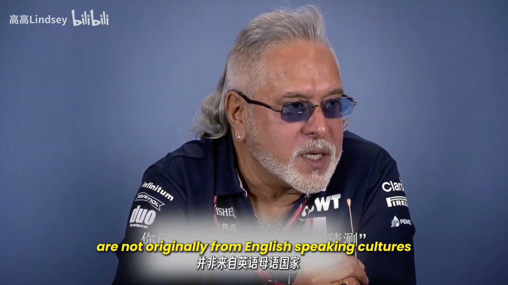
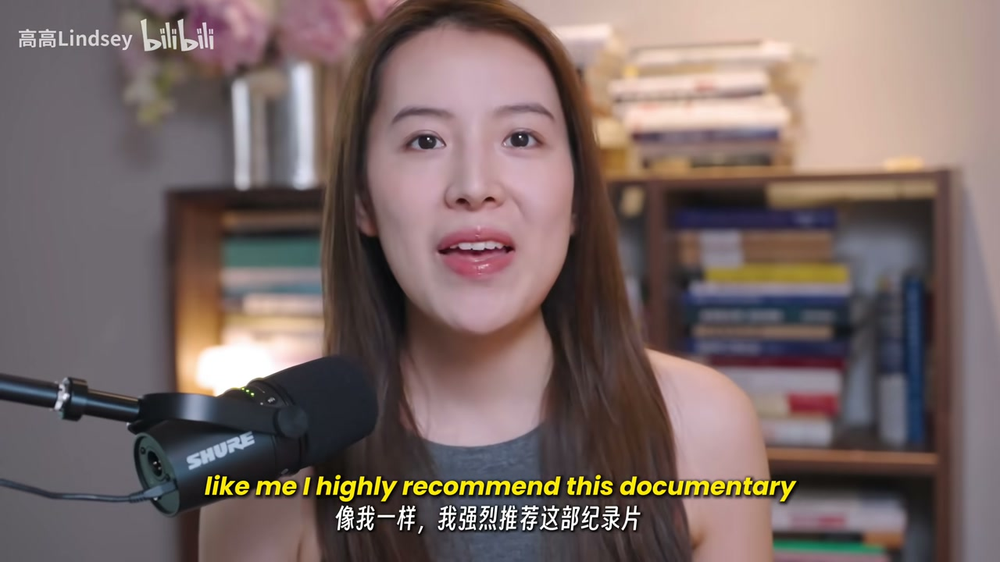
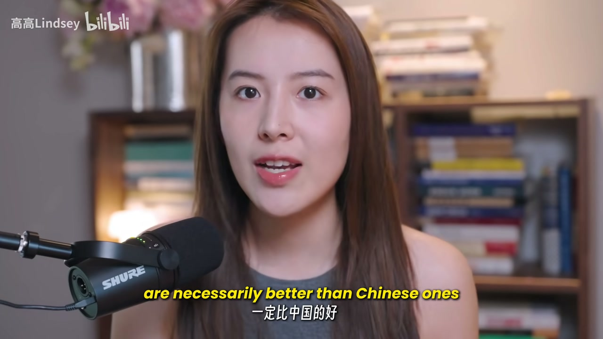

内容要点
全英短片主张：学英语最好的方式，是用英语去学你本来就感兴趣的事——历史、经济、娱乐与社会结构。UP 推荐三部「比剧还上头」的纪录片：Netflix《Explained》（约 20 分钟/集、话题广、发音清、有数据）、F1《Drive to Survive》（看懂陌生产业与多口音访谈）、经典《OJ: Made in America》（悬疑节奏+美国社会与名人文化）。收束：不是英文纪录片天然更好，而是要把自己放进语言里，从一开始就用语言学东西。
知识结构
用英语学感兴趣内容；打开新学习路径，三部片优于剧集。
Netflix；约20分钟/集；电竞到股市；补世界观；发音清晰可练演讲。
从零懂 F1；多季过山车叙事；非英语母语者口音→口音不重要、说清想法才重要。
连环上瘾；社会问题与名人文化；结论：用语言学东西，把自己放进语言。
别只为学英语而学英语：选一部你真想看完的纪录片，让输入变成「用英语理解世界」。
00:00-01:17方法 + 第一部：《Explained》
开场定调：最好的英语学习是用英语去学你真正感兴趣的事——历史、经济、娱乐，理解世界如何运转、社会结构如何织成。本片给出三部最爱纪录片，并称「甚至比剧集更好」，能打开全新学习方式。
第一部 Netflix《Explained》：每集约 20 分钟，不像传统纪录片一集一两小时；好跟、讲得清楚。最大卖点是每集不同话题——电竞、K-pop、占星、股市，覆盖社会经济、政治、娱乐，补齐成为「更完整的人」所需的知识碎片。发音清晰、有证据与数据，话题还可拿去练演讲。学生或职场人都适用。


01:17-02:18第二部：F1《Drive to Survive》
第二部《Formula One: Drive to Survive》。作者自称看前对 F1 一无所知、觉得遥远，看后对整个产业有清晰图景——不只是成粉，学一个完全不同的行业能补全「世界如何运转」的拼图。
多季内容；从 2019 季开始「每集都狠」：像过山车，冠军不到最后不知谁属。看到烧钱又拼天赋的产业如何运作，叙事紧、一直拉人。学英语加分点：大量车手与受访者并非英语文化出身，口音各异——证明口音不重要，关键是能否把想法说清楚（口播 across key，按语境为 get ideas across）。


02:18-03:25第三部 OJ + 把语言当工具
第三部《OJ: Made in America》：经典案件/谋杀叙事，停不下来；单集约一小时但集与集咬得很紧。爱悬疑/犯罪片可看——不仅因真实往事，更因深入美国社会运作，并触发对名人文化与名声机制的停顿反思；对美国历史与当下社会问题都有洞察。
收束：不只为学英语，更鼓励多看英文纪录片。不是英文片一定优于中文片，而是学好语言需要「真的用它去学东西」，从一开始就把自己放进那种语言里。


完整转录（64段）
以下文本由 Whisper medium 模型自动转录，可能存在少量识别误差，已尽可能修正。
The best way to learn English is to use English to learn something that you're generally interested in.
Use it to learn history, economics, and entertainment to understand how the world is working and how the whole social fabric is built.
So in this video, I will give you three documentaries which are my favorites and I say they're even better than TV series.
Watching this will open up a whole new way of learning English for you.
So the first one is Explained.
It's made by Netflix and every episode is only about 20 minutes.
It's very short.
It's not like a traditional documentary where we need to spend one or two hours per episode.
They're easy to follow, very clearly explained.
The best thing about this documentary is that it covers all kinds of different topics each episode.
Esports, K-pop, astrology, the stock market.
It includes social economics, politics, entertainment, all kinds of different sectors.
It will give you a whole new worldview.
Even if you're still a student or you're trying to build up your perspective on the world.
It fills in so many different pieces of knowledge that you need to become a more well-rounded person.
So I highly recommend Explained to everybody.
Whether you're still a student, already working, as long as you want to learn more about the world,
expand your knowledge, and train your English at the same time, you should watch this.
Pronunciation in this episode is super clear.
Everything is back up with evidence and data and you can even use these topics to view the speech.
The second one is Formula One.
Drive to Survive.
This one is huge.
It's so crazy.
I had absolutely no idea about Formula One before I watched this.
I feel like something very far away from my world.
But now I have a much clearer picture of this whole industry.
And it's not just about becoming a Formula One fan.
Learning about a completely different industry gives you a more complete picture of how the world works.
There are multiple seasons.
I started from that one in 2019 and every episode hits.
Because it's like a roller coaster.
Formula One is very, very unpredictable.
Nobody knows who will win the championship until the very end of the competition.
By watching this documentary, you got to see how this money-consuming,
it's talent-driven industry actually operates.
The story is so tight and the plot keeps pulling you in.
And the best part for learning English is that so many of the drivers and people being interviewed
are not originally from English-speaking cultures.
So you got to hear all kinds of different accents
and it really shows you that accent is not important.
What matters most is whether you can get your ideas across key.
The third one is OJ Made in America.
This is a very, very classic case.
A murder case, I'd say.
And you will not want to stop, want to stop watching.
Even though each episode is around one hour,
the episodes are so tightly connected to each other and you just keep going.
If you're a big fan of suspense or chill crime movies and TV series like me,
I highly recommend this documentary.
Not only because it's something that really happened many, many years ago,
but also because it gives you a deep look into how American society actually works.
And you will have so many moments watching this where you just stop and reflect.
So this documentary will give you a huge insight into social problems,
both historical and current in the US.
And you'll find yourself reflecting a lot of celebrity culture
and how fame operates in that society.
So what I would just say is beyond just learning English,
I really want to encourage everybody to watch more documentaries in English.
It's not because English documentaries are necessarily better than Chinese ones.
That's not the point.
The point is, if you want to learn a language well,
you need to actually use it to learn things.
You need to put yourself inside that language from the very beginning.